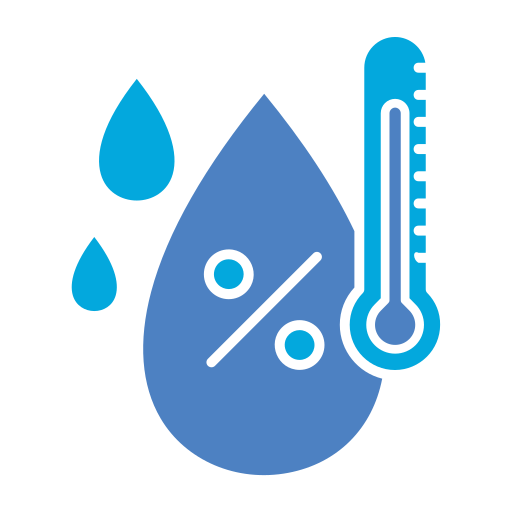

HumedadTEMPTRACKER
Tu compañero climático
Consulta el clima actual de una ciudad antes de tu próxima aventura.
Ingresa una ciudad para consultar el clima.
CLIMA ACTUAL
Temperatura del aire
Fuente: WeatherAPI.com
TEMPTRACKER
Consulta el clima actual de una ciudad antes de tu próxima aventura.
Ingresa una ciudad para consultar el clima.
CLIMA ACTUAL
Temperatura del aire

HumedadFuente: WeatherAPI.com